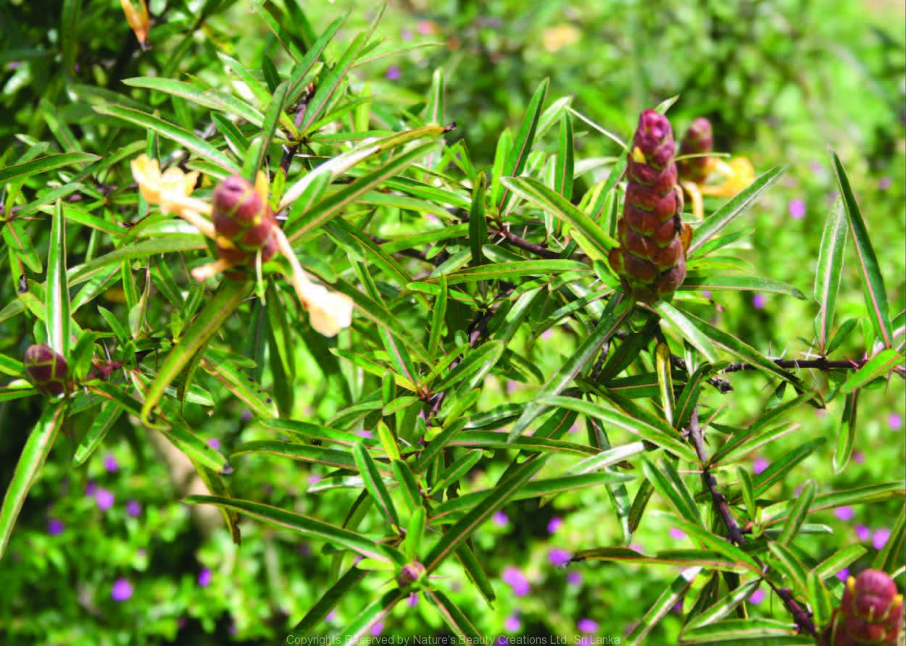

เสลดพังพอน
"เสลด พังพอน" มี 2 ชนิด คือ "เสลดพังพอนตัวผู้" และ "เสลดพังพอนตัวเมีย" ซึ่งทั้งสองชนิดมีสรรพคุณเด่น ๆ คือ ใช้ถอนพิษ แต่ "เสลดพังพอนตัวผู้" จะมีฤทธิ์อ่อนกว่า และส่วนใบจะมีรสขมกว่า
สรรพคุณของ "เสลดพังพอนตัวผู้" "ราก" ช่วยแก้ตาเหลือง ตัวเหลือง กินข้าวไม่ได้ ถอนพิษงู แมลงสัตว์กัดต่อย แก้ปวดฟัน ส่วน "ใบ" ก็ช่วยถอนพิษแมลงสัตว์กัดต่อย และยังแก้ปวดแผล แผลจากของมีคมบาด แก้โรคฝี โรคคางทูม ไฟลามทุ่ง งูสวัด เริม ฝีดาษ แก้ฟกช้ำ น้ำร้อนลวก ยุงกัด แก้ปวดฟัน เหงือกบวม
"เสลดพังพอนตัวเมีย" จะนำรากมาปรุงเป็นยาขับปัสสาวะ ขับประจำเดือน แก้ปวดเมื่อยที่เอว ส่วน "ใบ" ซึ่งมีรสจืดจะนำมาสกัดทำเป็นยาใช้รักษาแผลผิวหนังชนิดเริม แผลร้อนในในปาก แผลน้ำร้อนลวกได้ นอกจากนั้น ส่วนทั้ง 5 คือ ราก ต้น ใบ ดอก ผล สามารถใช้ถอนพิษต่าง ๆ ได้ดี ทั้งพิษแมลงสัตว์กัดต่อย ตะขาบ แมลงป่อง รักษาอาการอักเสบ งูสวัด ลมพิษ แผลน้ำร้อนลวก
ดิน : เสลดพังพอนเป็นพืชโตเร็วปานกลาง เจริญเติบโตได้ดีในดินที่อุดมสมบูรณ์ ไม่ค่อยชอบดินเหนียว แต่จะชอบดินร่วนปนทรายที่มีความชุ่มชื้นและระบายน้ำดีเป็นพิเศษ
แดด : ชอบแสงแดดครึ่งวันหรือเต็มวัน แต่ก็สามารถเจริญเติบโตได้ทั้งในแดดและในร่ม ชอบสภาพอากาศร้อนชื้น หากปลูกในบริเวณที่มีแดดรำไรจะทำให้ใบมีคุณภาพในการปรุงยาดีกว่า รวมถึงทำให้ใบสวยและไม่เหลืองด้วย
น้ำ : เสลดพังพอนเป็นพืชที่ต้องการน้ำปานกลาง โดยในช่วงแรกควรรดน้ำและรักษาความชื้นทุกวันจนกว่ากิ่งชำจะตั้งตัวได้ และถ้าหากวันไหนอากาศร้อนมากก็ให้รดน้ำทั้งเช้าและเย็น หลังจากนั้นจึงค่อยเปลี่ยนลดลงมาเหลือรดน้ำแค่วันเว้นวัน และถ้าวันไหนฝนตกแล้วก็ไม่ต้องรด
ปุ๋ย : ถ้าหากดินปลูกอุดมสมบูรณ์ดีอยู่แล้วก็ไม่จำเป็นต้องใส่ปุ๋ย ทว่าหลังจากเก็บเกี่ยวไปแล้ว ควรจะใส่ปุ๋ยคอกเพิ่มลงไปสักหน่อย จะได้ช่วยเร่งการเจริญเติบโตของต้นให้เร็วขึ้น
ใบ ตำผสมน้ำข้าวสารใช้พอกหรือทาแผลแมลงกัดต่อยเพื่อแก้พิษ หรือเป็นลมพิษ หรือต้มกิน ช่วยลดอาการจากไข้มาลาเรีย มีรสขมมาก แก้พิษแมลงสัตว์กัดต่อย เช่น ผึ้ง แมงป่อง ตะขาบ แผลฟกช้ำจากการกระทบกระแทก หรือแผลมีเลือดออก ให้ใช้ใบตำพอกหรือผสมกับเหล้าตำพอก และอาจจะใช้ต้มน้ำกินทำให้เลือดไหลเวียนดี
ต้น ปลูกเป็นแนวรั้วป้องกันงู
ราก รสจืดเย็น ฝนกับสุราดื่ม และทาแก้พิษงู แมลงสัตว์กัดต่อย
ใบ ตำผสมน้ำข้าวสารใช้พอกหรือทาแผลแมลงกัดต่อยเพื่อแก้พิษ หรือเป็นลมพิษ หรือต้มกิน ช่วยลดอาการจากไข้มาลาเรีย มีรสขมมาก แก้พิษแมลงสัตว์กัดต่อย เช่น ผึ้ง แมงป่อง ตะขาบ แผลฟกช้ำจากการกระทบกระแทก หรือแผลมีเลือดออก ให้ใช้ใบตำพอกหรือผสมกับเหล้าตำพอก และอาจจะใช้ต้มน้ำกินทำให้เลือดไหลเวียนดี
ควรเก็บรักษาในที่สะอาดเย็นไม่อับชื้น มีอากาศถ่ายเทได้ดีและไม่ถูกแสงแดด - เก็บในภาชนะที่ปิดสนิท ป้องกันการ ปนเปื้อนและแมลงเข้าทำลาย